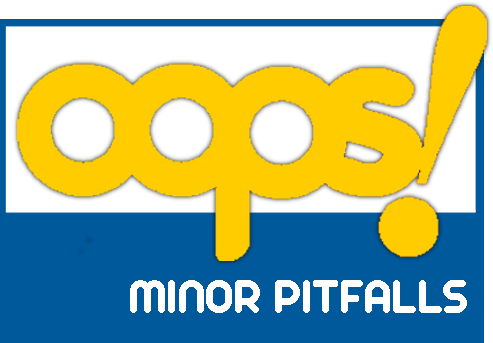

Evaluation results
There are three levels of importance in pitfalls according to
their impact on the ontology:
- Critical It is crucial to correct the pitfall. Otherwise, it could affect the ontology consistency, reasoning, applicability, etc.
- Important Though not critical for ontology function, it is important to correct this type of pitfall.
- Minor It is not really a problem, but by correcting it we will make the ontology nicer.
Pitfalls detected:
A class whose name refers to two or more different concepts is created.
• This pitfall appears in the following elements:
› http://www.cidoc-crm.org/cidoc-crm/E29_Design_or_Procedure
• This pitfall appears in the following elements:
› http://www.cidoc-crm.org/cidoc-crm/E29_Design_or_Procedure
This pitfall consists in creating an ontology element and failing to provide human readable annotations attached to it. Consequently, ontology elements lack annotation properties that label them (e.g. rdfs:label, lemon:LexicalEntry, skos:prefLabel or skos:altLabel) or that define them (e.g. rdfs:comment or dc:description). This pitfall is related to the guidelines provided in [5].
• The following elements have neither rdfs:label or rdfs:comment (nor skos:definition) defined:
› http://www.w3.org/ns/prov#Agent
› http://iflastandards.info/ns/lrm/lrmoo/F1_Work
› http://iflastandards.info/ns/lrm/lrmoo/F2_Expression
› http://iflastandards.info/ns/lrm/lrmoo/F28_Expression_Creation
› http://www.cidoc-crm.org/cidoc-crm/E39_Actor
› http://www.w3.org/2004/02/skos/core#ConceptScheme
› http://www.w3.org/ns/prov#Entity
› http://www.w3.org/2004/02/skos/core#Concept
› http://www.cidoc-crm.org/cidoc-crm/E33_Linguistic_Object
› http://iflastandards.info/ns/lrm/lrmoo/R17_created
› http://iflastandards.info/ns/lrm/lrmoo/R76_is_derivative_of
› http://www.w3.org/ns/prov#wasAttributedTo
› http://www.cidoc-crm.org/cidoc-crm/P33_used_specific_technique
› http://iflastandards.info/ns/lrm/lrmoo/R15_has_fragment
› http://iflastandards.info/ns/lrm/lrmoo/R3_is_realised_in
› http://www.cidoc-crm.org/cidoc-crm/P14_carried_out_by
• The following elements have neither rdfs:label or rdfs:comment (nor skos:definition) defined:
› http://www.w3.org/ns/prov#Agent
› http://iflastandards.info/ns/lrm/lrmoo/F1_Work
› http://iflastandards.info/ns/lrm/lrmoo/F2_Expression
› http://iflastandards.info/ns/lrm/lrmoo/F28_Expression_Creation
› http://www.cidoc-crm.org/cidoc-crm/E39_Actor
› http://www.w3.org/2004/02/skos/core#ConceptScheme
› http://www.w3.org/ns/prov#Entity
› http://www.w3.org/2004/02/skos/core#Concept
› http://www.cidoc-crm.org/cidoc-crm/E33_Linguistic_Object
› http://iflastandards.info/ns/lrm/lrmoo/R17_created
› http://iflastandards.info/ns/lrm/lrmoo/R76_is_derivative_of
› http://www.w3.org/ns/prov#wasAttributedTo
› http://www.cidoc-crm.org/cidoc-crm/P33_used_specific_technique
› http://iflastandards.info/ns/lrm/lrmoo/R15_has_fragment
› http://iflastandards.info/ns/lrm/lrmoo/R3_is_realised_in
› http://www.cidoc-crm.org/cidoc-crm/P14_carried_out_by
This pitfall appears when any relationship (except for those that are defined as symmetric properties using owl:SymmetricProperty) does not have an inverse relationship (owl:inverseOf) defined within the ontology.
• This pitfall appears in the following elements:
› http://iflastandards.info/ns/lrm/lrmoo/R17_created
› http://iflastandards.info/ns/lrm/lrmoo/R76_is_derivative_of
› http://www.w3.org/ns/prov#wasAttributedTo
› http://www.w3.org/2004/02/skos/core#inScheme
› http://www.cidoc-crm.org/cidoc-crm/P33_used_specific_technique
› http://iflastandards.info/ns/lrm/lrmoo/R15_has_fragment
› http://iflastandards.info/ns/lrm/lrmoo/R3_is_realised_in
› http://www.cidoc-crm.org/cidoc-crm/P14_carried_out_by
• This pitfall appears in the following elements:
› http://iflastandards.info/ns/lrm/lrmoo/R17_created
› http://iflastandards.info/ns/lrm/lrmoo/R76_is_derivative_of
› http://www.w3.org/ns/prov#wasAttributedTo
› http://www.w3.org/2004/02/skos/core#inScheme
› http://www.cidoc-crm.org/cidoc-crm/P33_used_specific_technique
› http://iflastandards.info/ns/lrm/lrmoo/R15_has_fragment
› http://iflastandards.info/ns/lrm/lrmoo/R3_is_realised_in
› http://www.cidoc-crm.org/cidoc-crm/P14_carried_out_by
The ontology elements are not named following the same convention (for example CamelCase or use of delimiters as "-" or "_") . Some notions about naming conventions are provided in [2].
*This pitfall applies to the ontology in general instead of specific elements.
*This pitfall applies to the ontology in general instead of specific elements.
Suggestions or warnings:
The domain and range axioms are equal for each of the following object properties. Could they be symmetric or transitive?
› | http://iflastandards.info/ns/lrm/lrmoo/R76_is_derivative_of
› | http://iflastandards.info/ns/lrm/lrmoo/R76_is_derivative_of
According to the highest importance level of pitfall found in your ontology the conformace bagde suggested is "Minor pitfalls" (see below). You can use the following HTML code to insert the badge within your ontology documentation:

<p>
<a href="http://oops.linkeddata.es">
<img src="http://oops.linkeddata.es/resource/image/oops_minor.png"
alt="Minor pitfalls were found" height="69.6" width="100" /></a>
</p>
References
Lexicalizing Ontologies: The issues behind the labels. In Multimodal communication in the 21st century: Professional and academic challenges. 33rd Conference of the Spanish Association of Applied Linguistics (AESLA), XXXIII AESLA.
Ontology development 101: A guide to creating your first ontology.
Evaluation of Taxonomic Knowledge in Ontologies and Knowledge Bases. Proceedings of the Banff Knowledge Acquisition for Knowledge-Based Systems Workshop. Alberta, Canada.
Style guidelines for naming and labeling ontologies in the multilingual web.
Ontology Evaluation. PhD thesis.
Ontology evaluation. In Handbook on ontologies, pages 251-273. Springer.
Owl pizzas: Practical experience of teaching owl-dl: Common errors & common patterns. In Engineering Knowledge in the Age of the Semantic Web, pages 63-81. Springer.
Weaving the pedantic web. In Proceedings of the WWW2010 Workshop on Linked Data on the Web, LDOW 2010, Raleigh, USA, April 27, 2010.
D7. 1.3-study on persistent URIs, with identification of best practices and recommendations on the topic for the Mss and the EC. PwC EU Services.
“Linked Data - Design issues”. http://www.w3.org/DesignIssues/LinkedData.html
Linked Data: Evolving the Web into a Global Data Space. Morgan & Claypool, 1st edition.
Is your linked data vocabulary 5-star?. http://bvatant.blogspot.fr/2012/02/is-your-linked-data-vocabulary-5-star_9588.html
Enter your ontology to scan: